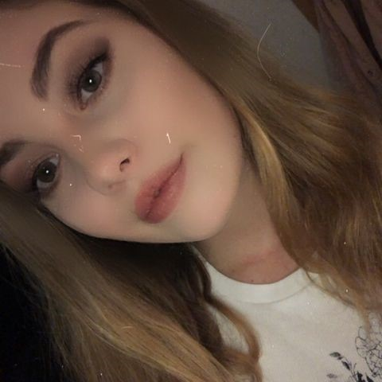
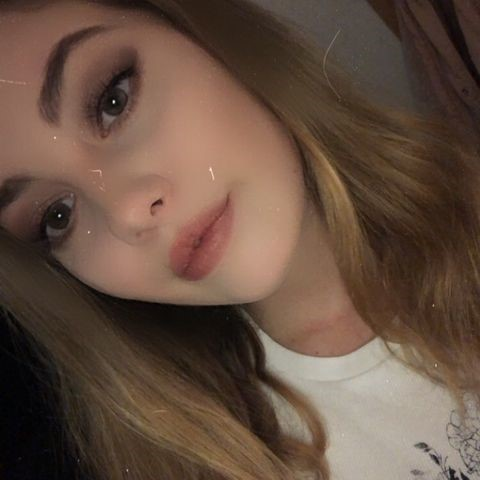

Etwas zu meiner Person

 

Ich komme aus Freiburg und lebe dort auch noch.
Ich bin im Februar geborgen und somit Wassermann als Sternzeichen.
Meine Freunde nennen mich Rin, was oft für Verwirrung sorgt.
Meine lieblingsfarbe ist Grün :)
und ich liebe Torten :P